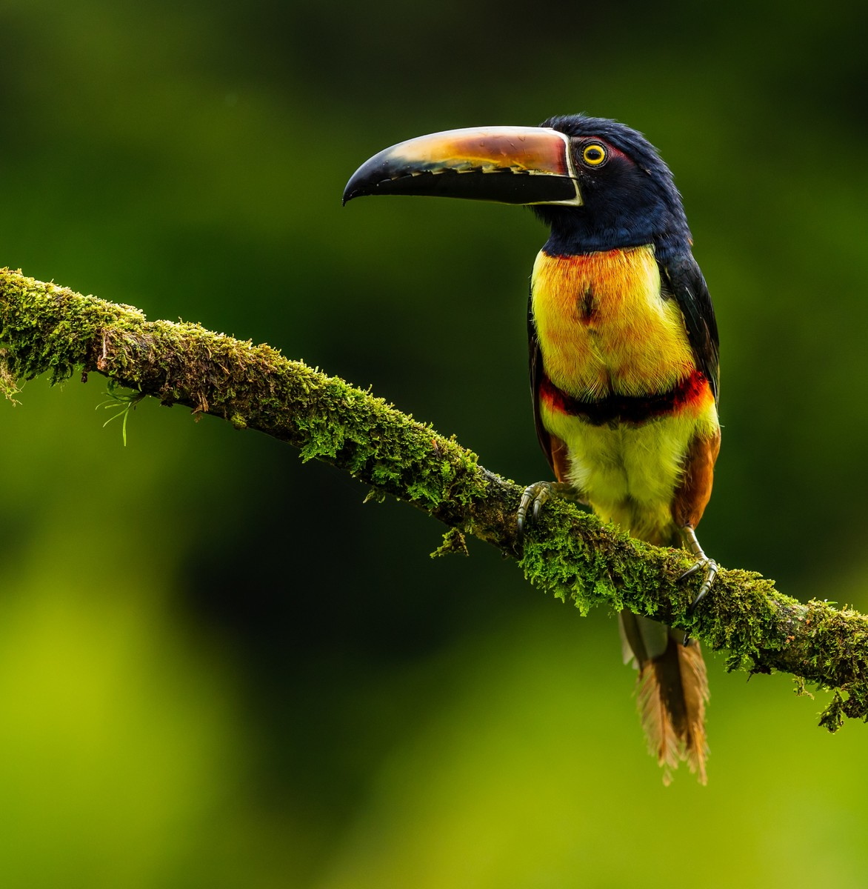

Node + Express + Sharp
The Goal
Install and start the application
Get the code from this github repository :
# download an image hosted in a github repository
$ git clone \
--depth 1 \
https://github.com/jeromedecoster/black-white-node-express-sharp.git \
/tmp/bw
# cd + install
$ cd /tmp/bw && npm install
If you look at index.js, the code is really simple :
- We use multer with the MemoryStorage.
- We use greyscale and toBuffer.
const app = express()
app.use(express.static('public'))
// memory storage
var upload = multer({ storage: multer.memoryStorage() })
app.post('/upload', upload.single('file'), (req, res) => {
// convert
sharp(req.file.buffer)
.greyscale()
.toBuffer(function (err, buffer) {
// add a header to display the image rather than download it
res.header('Content-Type', 'image/jpeg')
res.send(buffer)
})
})
Let’s start the server :
# start the server
$ node .
Convert an image using a HTML form
If you open localhost:3000 you should see :
This is a multipart/form-data form grabbed from tympanus.
Select the file /tmp/bw/bird.jpg and upload it :

Now you should be redirected to /upload and see :
Convert an image using curl
We can use curl to upload then save the gray version :
- We use the -X, –request
option send a POST request. - We use the -F, –form <name=content> option to select the file.
- We use the -s, –silent option.
- We use the -o, –output
option to save the file.
# upload `bird.jpg` and save the result as `bird-gray.jpg`
$ curl --request POST \
--form "file=@bird.jpg" \
--silent \
http://localhost:3000/upload \
--output bird-gray.jpg